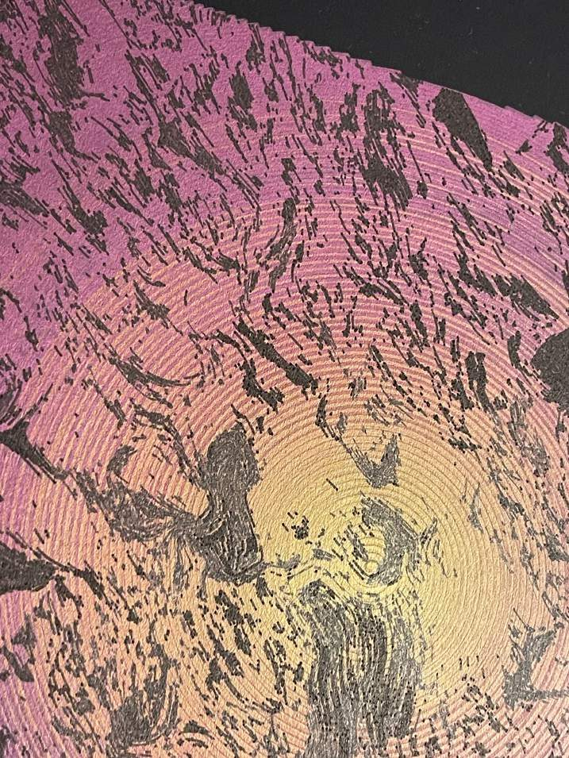
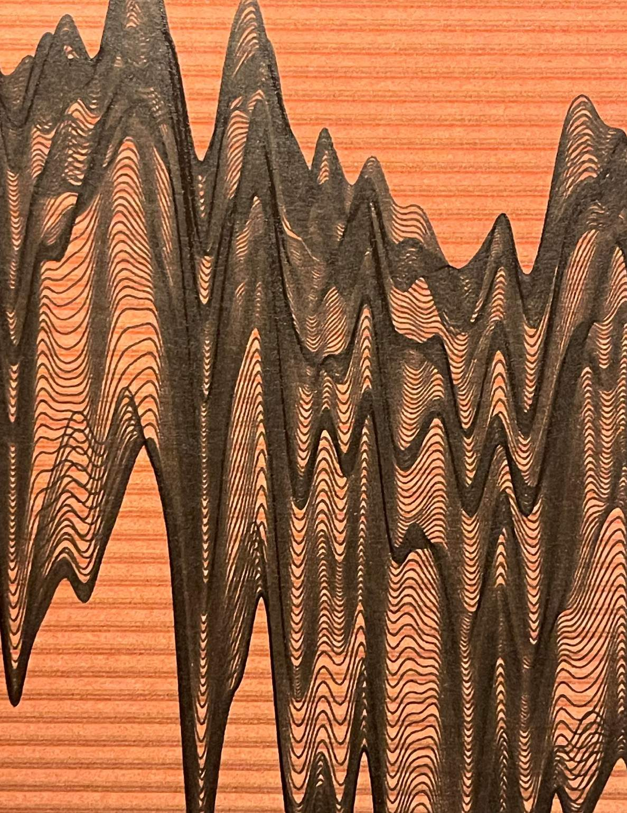
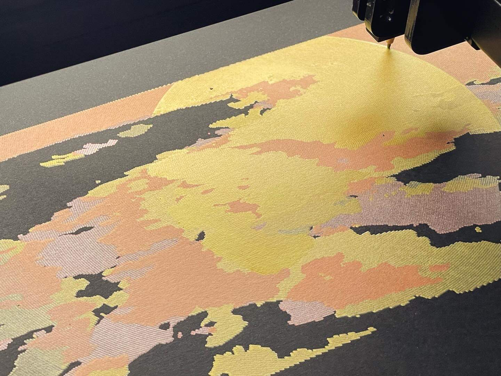
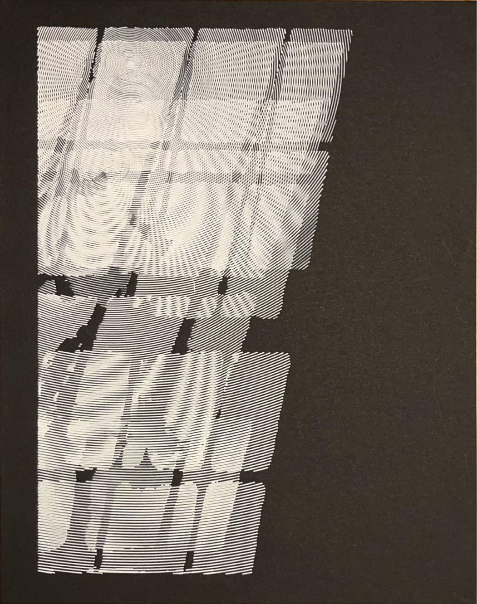
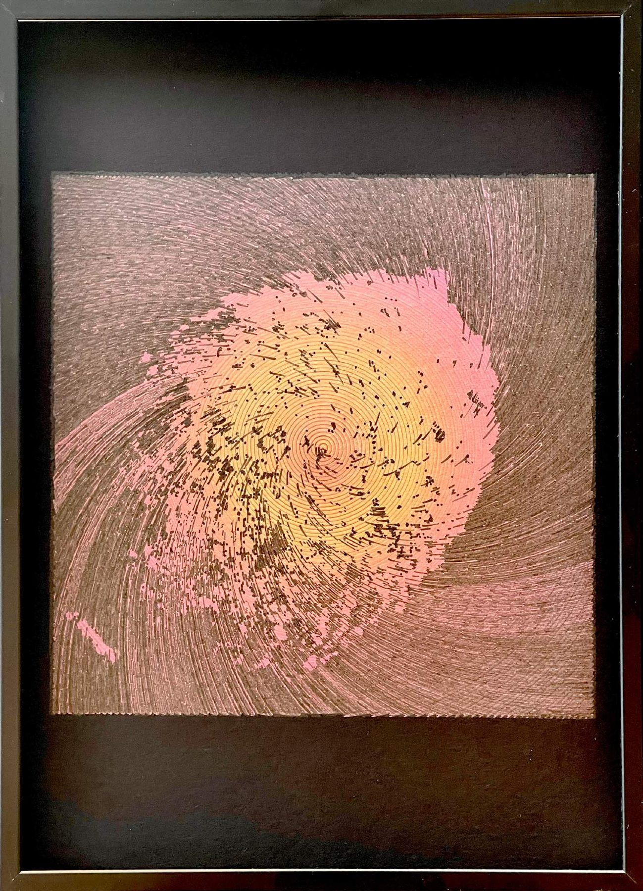
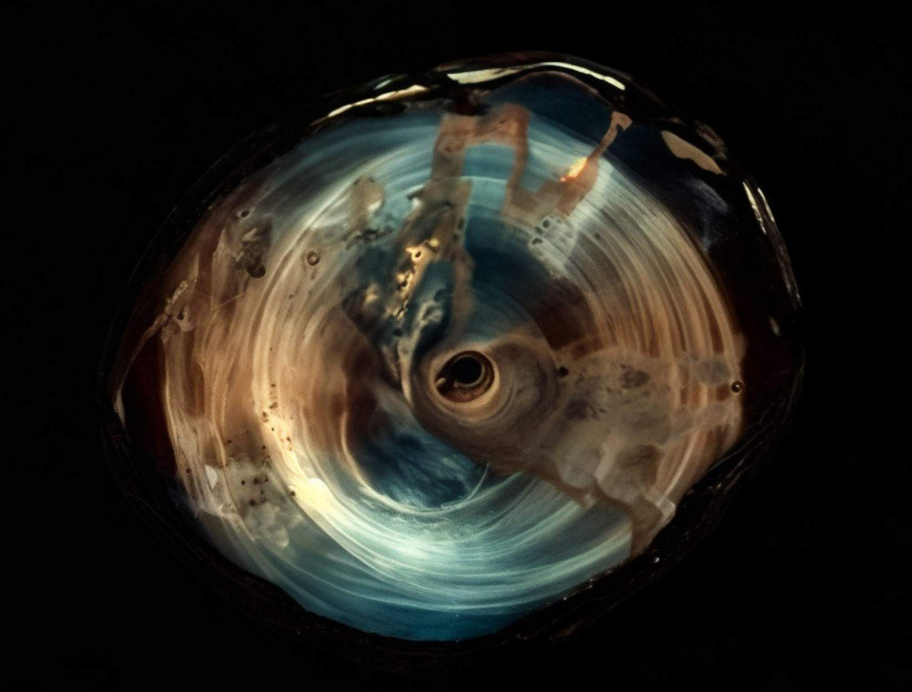
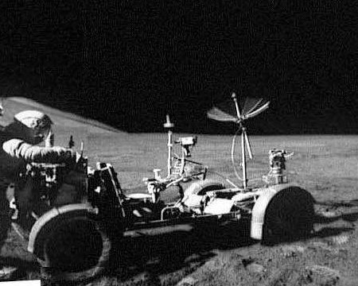
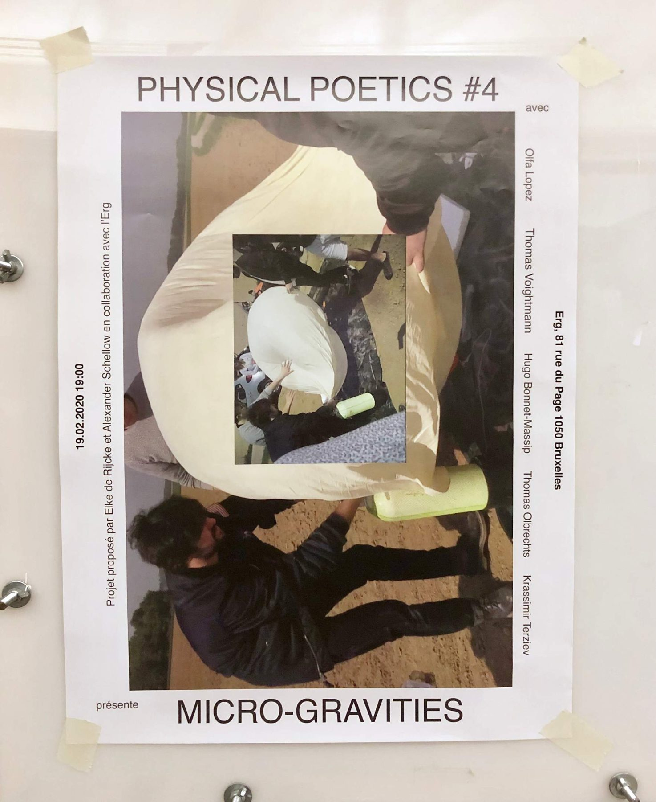

An art collective building drawing machines that listen to light, sound and signals from space — and slowly write them down.

On 26 September 2022, the DART probe crashed into the asteroid Dimorphos to test whether we could change its course. Just before impact it sent back its last images, the closest ever taken of an asteroid's surface. These final signals are what the machine draws.
| signal | last images before impact, dimorphos |
| medium | plotter, pigmented ink and india ink on cardboard |
| year | 2025 |

The first sound of wind on Mars, received on 24 December 2021 and sped up a hundred times to become audible — drawn as its wave spectrum.
| signal | martian wind, ×100 |
| medium | plotter, pigmented ink and india ink on paper |
| year | 2025 |

A study of time passing, perceived through the movement of clouds. Part of lumières.
| signal | passing clouds |
| medium | plotter, pigmented india ink on paper |
| year | 2024 |

Light coming into a room as a metaphor for passing time — the languor of an afternoon spent looking out of the window.
| signal | light through a window |
| medium | drawing machine, acrylic marker on paper |
| year | 2024 · with banotte |

| signal | impact approach, dimorphos |
| medium | plotter, pigmented ink on cardboard |
| year | 2025 |

Droplets deposited in weightlessness: without gravity, the faintest forces — invisible on Earth — reveal the intrinsic nature of fluids.
| gravity | 0 – 1 g |
| years | 2021 – 2025 |

A new 3D-printing process using lunar dust, so that a base on the Moon could be built from local material only.
| material | lunar regolith |
| years | 2017 – 2021 |

A three-week workshop with students of the Erg, “the concept of representation — between art and science”, followed by a group show and a public evening.
| where | erg, brussels |
| year | 2020 |